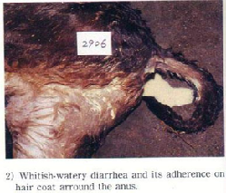

Colibacillosis
Colibacillosis is one of the most common diseases of new born farm animals caused by E. Coli
- Although this disease is common under 3 days of ag e but it occurs as early as 12-18 hours after birth it occurs in calves mainly during the first 3 weeks of life.
- Septicemic Colibacillosis is characterized by an acute generalized infection with diarrhea.
- Enteric Colibacillosis is characterized by pine-Apple juice diarrhea.

- Genacyn Vet-10 Injection-5ml/100kg body weight
- Trimycin/Triplex Vet Bolus-01 bolus for 30kg body weight for first day and then 1bolus for 60kg body weight
- Fluid Therapy (Electromin Powder and Zesup-Vet Syrup).
Or, as directed by the Registered Veterinary physician